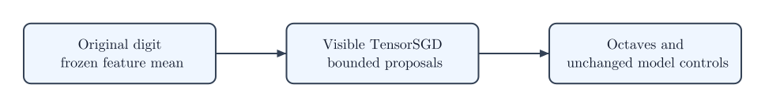
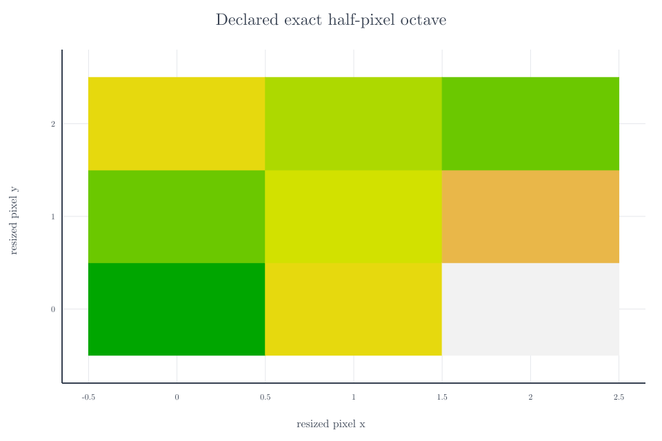
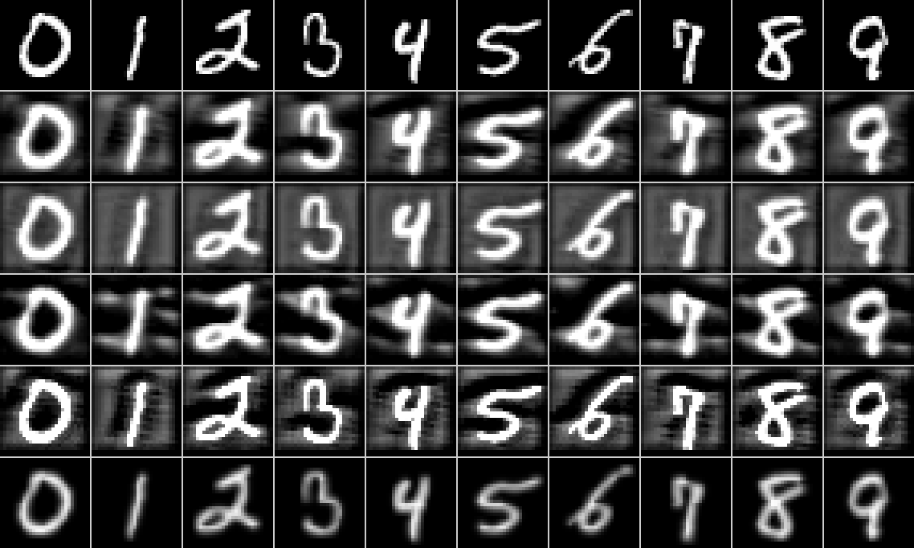
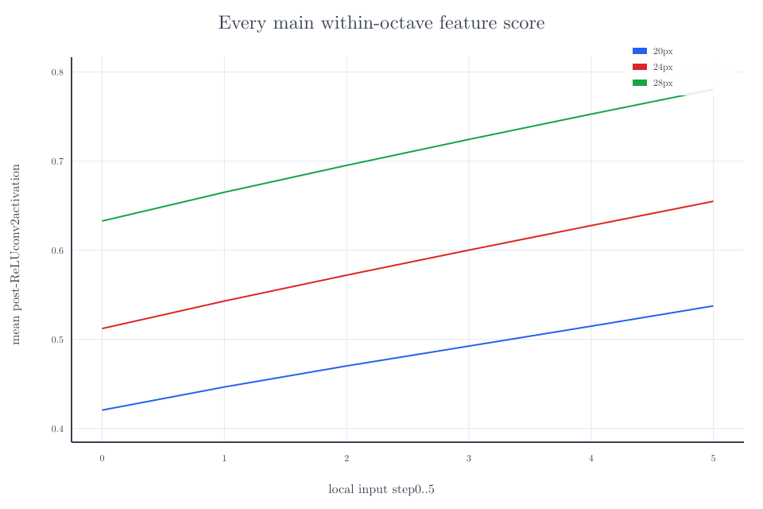

DeepDream:visible bounded tensor optimization of original images
Abstract
Frozen convolutional features can be amplified by changing an existing image. Start from genuine MNIST digits,show every image TensorSGD step,projection and backtracking trial across three octaves,and compare layer,initial-weight,single-scale and resize-only controls.
Source example: examples/cpp/source/nn/1_convolutional_neural_networks/1.11_interpretability/deepdream.cpp.
The method
Maximize a frozen layer's mean post-ReLUactivation by changing only the input. With ordinary input derivativeg,use a shared RMS-normalized ascent direction,project to bounded pixels,and backtrack on actual candidate objectives:
The report expresses ascent through plain tensorSGD on the negative normalized derivative. Classifier weights remain frozen;the mean feature objective differs from fitting a categorical loss. This small MNIST adaptation is not a pretrained Inception dream benchmark.
The concept diagram below is drawn by dm::graphics::Diagram. Its editable C++
source is the complete block below; regeneration uses the same datamunge toolchain
as the numerical examples. Exports consume the saved local SVG.
#include <dm/dm.hpp>
int main() {
std::filesystem::create_directories("build");
dm::graphics::Diagram diagram;
diagram.node("n0", {0.0, 0}, "Original digit\n frozen feature mean");
diagram.node("n1", {5.2, 0}, "Visible TensorSGD\n bounded proposals");
diagram.node("n2", {10.4, 0}, "Octaves and\n unchanged model controls");
diagram.edge("n0", "n1").edge("n1", "n2");
diagram.save_svg("build/deepdream_concept.svg");
}
Frozen features and genuine starting digits
Restore the exact selected and actual-initial MNIST arrays from [vanilla saliency](vanilla_saliency.mepml),whose96explicit tensor Adam updates and all held-out errors remain visible. No classifier parameter is optimized here. Start from the same ten genuine held-out first-digit observations and retain their source IDs. The optimized objects are image tensors,not model weights.
Maximize the mean of all post-ReLUconv2features,or conv1for a separate control. Use20px,24px,28pxhalf-pixel octaves,five input steps at each. Resizing changes the image and the feature lattice,so monotonicity is checked within each octave; the first20pxscore and final28pxscore are not a same-input-scale comparison. Actual main within-octave scores are.419970304to.536893606at20px, .511448920to.654157698at24px,and.631932259to.779571593at28px. The downward transitions between octaves are resampling effects and remain visible. The shared RMS is over the entire image batch,not independently per digit.
Executed tensor architecture
The diagram shows the forward MNIST CNN that the attribution or feature-optimization method inspects; the attribution algorithm is explained separately.
This figure executes the inference configuration shown in the code, using a zero-valued shape probe without fitting or loading a checkpoint. Named stage boundaries group whole subgraphs where available; other nodes retain functional-layer detail. Exact batch-inclusive shapes and reachable parameter totals come from the trace. Shared linear scales map spatial dimensions and channel counts to blocks; the one-pixel visibility floor is disclosed in the legend. Labels use compact monospace text, rotate counterclockwise and sit beside their own glyphs. Arrows flow left to right; wide diagrams scroll at native size on the website.
#include <dm/dm.hpp>
int main() {
namespace n = dm::nn;
namespace m = n::models;
n::set_num_threads(2);
std::filesystem::create_directories("build");
n::ParameterStore p(1103);
n::Module architecture_model(
[&](const n::Tensor& image) { return m::SaliencyCnn(p, image).logits; },
"DeepDream:visible bounded tensor optimization of original images");
n::ModelPlotOptions options;
options.style = n::ModelPlotStyle::Flow;
options.detail = n::ModelPlotDetail::Blocks;
options.labels = {.type = n::ModelPlotLabel::NameAndShape, .size = 12, .wrap = 24};
options.spacing = {.layer = 24, .lane = 12, .label = 8, .margin = 20};
options.sizing.spatial_size = 96;
options.sizing.channel_size = 42;
options.sizing.minimum_extent = 1;
options.opacity = .8;
const auto diagram = architecture_model.plot(n::zeros({1, 28, 28, 1}), options);
diagram.save_svg("build/deepdream_architecture.svg");
std::print(
"{} displayed nodes; {} reachable learned values.\n",
diagram.nodes().size(),
diagram.parameter_count());
}12 displayed nodes; 26826 reachable learned values.

Hand-checkable bounded step and half-pixel resize
On negative mean squared distance to.7,an image filled.6has gradient.05per pixel for four pixels. A rate2RMS-normalized proposal overshoots;four halvings accept rate.125and pixels.725. Zero rate and zero RMS produce exact no-ops. The declared2x2to3x3fixture retains all nine exact half-pixel values. The native oracle also compares every octave coordinate with the independent Doublehost interpolation convention,including rectangular sizes and identity resize.
#include <dm/dm.hpp>
int main() {
namespace n = dm::nn;
namespace m = n::models;
auto evaluate = [](const n::Tensor& image) {
auto x = image.detach().clone().requires_grad_();
const auto score = -n::mean(n::square(x - double(.7f)));
return m::DreamEvaluation{score.item(), n::grad(score, {x})[0].detach()};
};
const auto step = m::DreamAscent(n::full({1, 2, 2, 1}, double(.6f)), 2., evaluate);
const auto corners = n::from_vector(std::vector<float>{0, 1, .5f, .25f}, {1, 2, 2, 1}),
resized = m::DreamResize(corners, 3, 3);
std::print(
"Declared quadratic before/after {:.9g}/{:.9g},RMS {:.9g},rate {},halvings "
"{},pixels {};all9half-pixelvalues {}.\n",
step.before,
step.after,
step.rms,
step.step,
step.backtracks,
step.image,
resized);
auto plot = n::plot_tensor_map(n::reverse(resized.reshape({3, 3}), {0}), 0, 1);
plot.title("Declared exact half-pixel octave")
.x_label("resized pixel x")
.y_label("resized pixel y");
plot.save_svg("build/deepdream_fixture.svg");
}Declared quadratic before/after -0.00999999326/-0.00062500179,RMS 0.0499999821,rate 0.125,halvings 4,pixels float32[1, 2, 2, 1] [[[[0.725], [0.725]], [[0.725], [0.725]]]] (grad_fn=Cast);all9half-pixelvalues float32[1, 3, 3, 1] [[[[0], [0.5], [1]], [[0.25], [0.4375], [0.625]], [[0.5], [0.375], [0.25]]]].

Every input TensorSGD step,projection and backtracking trial
Warm one Doubleimage leaf per octave before constructing plain tensorSGD. Evaluate ordinary Float32feature gradients,compute their RMS inDouble,and pass the NEGATIVE normalized gradient to a minimizing SGD step. Clip every proposal to[0,1]inDouble,round toFloat32,then evaluate its actual frozen feature score. Reject decreases,reset the original leaf and halve the rate,up to12trials. If all proposals fail,retain the original image explicitly. The optimizer has no momentum or fitted model state;rejected trials never alter classifier arrays.
Controls:conv1instead ofconv2,actual initial weights,one28pxoctave with15steps, and zero-rate20/24/28resizing. The zero-rate result is the resize-only image, which can differ from the original pixels. Every iteration and accepted rate is retained. All image transformations and numerical updates use tensors.
#include <dm/dm.hpp>
int main() {
namespace n = dm::nn;
namespace m = n::models;
n::set_num_threads(2);
std::filesystem::path cache;
if (const auto* p = std::getenv("DATAMUNGE_DATA_DIR"))
cache = p;
else if (const auto* p = std::getenv("XDG_CACHE_HOME"))
cache = std::filesystem::path(p) / "datamunge/datasets";
else
cache = std::filesystem::path(std::getenv("HOME")) / ".cache/datamunge/datasets";
dm::datasets::prepare_example_data("mnist-assets", cache.string());
const auto pools = m::LoadSaliency(cache / "saliency");
const auto& fit = pools[0];
const auto& validation = pools[1];
const auto& test = pools[2];
n::ParameterStore p(1103);
{
n::NoGradGuard guard;
m::SaliencyCnn(p, n::zeros({1, 28, 28, 1}));
}
auto predict = [&](const n::Tensor& images) {
n::NoGradGuard guard;
std::vector<n::Tensor> parts;
for (std::int64_t start = 0; start < images.size(0); start += 32)
parts.push_back(
m::SaliencyCnn(
p,
n::slice_axis(images, 0, start, std::min<std::int64_t>(start + 32, images.size(0))))
.logits);
return n::concat(parts, 0);
};
for (const auto& [key, value] : n::load_npz("build/vanilla_saliency_best.npz"))
p.set(key, value.clone());
std::vector<std::int64_t> chosen;
const auto labels = test.labels.to_vector<int>();
for (int digit = 0; digit < 10; ++digit) {
const auto it = std::find(labels.begin(), labels.end(), digit);
chosen.push_back(it - labels.begin());
}
const auto examples = m::SaliencyRows(test, chosen);
const auto z = predict(examples.images);
const auto sorted = n::argsort(z, true);
const auto targets = n::select(sorted, 1, 0).to(n::DType::Int32),
runners = n::select(sorted, 1, 1).to(n::DType::Int32);
const auto before = p.flatten();
n::ParameterStore random(1103);
{
n::NoGradGuard guard;
m::SaliencyCnn(random, n::zeros({1, 28, 28, 1}));
}
for (const auto& [key, value] : n::load_npz("build/vanilla_saliency_initial.npz"))
random.set(key, value.clone());
const auto random_before = random.flatten();
n::NamedTensors arrays{{"images", examples.images}, {"source_ids", examples.source}};
std::vector<n::Tensor> displays{examples.images};
std::print(
"| variant | octave side | step | before | after | accepted rate | halvings "
"|\n|---|---:|---:|---:|---:|---:|---:|\n");
const std::vector<std::string> names{"main", "conv1", "initial", "single", "zero"};
for (const auto& name : names) {
auto current = examples.images;
const std::vector<int> sizes =
name == "single" ? std::vector<int>{28} : std::vector<int>{20, 24, 28};
const int iterations = name == "single" ? 15 : 5;
const int layer = name == "conv1" ? 0 : 1;
const double base_rate = name == "zero" ? 0. : .02;
auto& store = name == "initial" ? random : p;
int ordinal = 0;
for (std::size_t octave = 0; octave < sizes.size(); ++octave) {
current = m::DreamResize(current, sizes[octave], sizes[octave]);
n::ParameterStore input(0, n::DType::Float64);
input.get("image", current.shape(), n::init::zeros());
input.set("image", current.to(n::DType::Float64));
n::OptimizerConfig config;
config.kind = n::OptimizerKind::Sgd;
n::Optimizer sgd(input, base_rate, config);
for (int iteration = 0; iteration < iterations; ++iteration) {
auto x = current.detach().clone().requires_grad_();
const auto features = m::SaliencyConvFeatures(store, x);
const auto objective = n::mean(layer ? features.conv2 : features.conv1);
const auto gradient = n::grad(objective, {x})[0].detach();
const auto wide = gradient.to(n::DType::Float64), rms = n::sqrt(n::mean(n::square(wide)));
auto accepted = current;
double after = objective.item(), rate = 0;
int halvings = 0;
if (base_rate > 0 && rms.item() > 0) {
rate = base_rate;
bool found = false;
for (int trial = 0; trial < 12; ++trial) {
input.set("image", current.to(n::DType::Float64));
sgd.set_learning_rate(rate);
sgd.step({-wide / (rms + 1e-12)});
const auto candidate = n::clip(input.at("image"), 0., 1.).to(n::DType::Float32);
n::Tensor score;
{
n::NoGradGuard guard;
const auto f = m::SaliencyConvFeatures(store, candidate);
score = n::mean(layer ? f.conv2 : f.conv1);
}
if (score.item() >= objective.item()) {
accepted = candidate;
after = score.item();
halvings = trial;
found = true;
break;
}
rate *= .5;
}
if (!found) {
rate = 0;
halvings = 12;
}
}
if (after < objective.item())
return 1;
std::print(
"| {} | {} | {} | {:.9g} | {:.9g} | {:.9g} | {} |\n",
name,
sizes[octave],
iteration,
objective.item(),
after,
rate,
halvings);
const auto prefix = name + "_o" + std::to_string(octave) + "_s" + std::to_string(iteration);
arrays.push_back({prefix + "_image", accepted});
arrays.push_back({prefix + "_gradient", gradient});
arrays.push_back({prefix + "_before", objective.detach()});
arrays.push_back({prefix + "_after", n::full({}, after, n::DType::Float64)});
arrays.push_back({prefix + "_rate", n::full({}, rate, n::DType::Float64)});
arrays.push_back({prefix + "_backtracks", n::full({}, halvings, n::DType::Int32)});
current = accepted;
++ordinal;
}
}
arrays.push_back({name + "_final", current});
displays.push_back(current);
}
auto resized = examples.images;
for (int side : {20, 24, 28})
resized = m::DreamResize(resized, side, side);
if (n::max(n::abs(resized - displays.back())).item() != 0 || before != p.flatten() ||
random_before != random.flatten())
return 1;
std::print(
"Every75image iterations recorded;zero-rate EXACTresize-only,all16frozen arrays "
"unchanged;source IDs {}.\n",
examples.source);
n::save_npz("build/deepdream_outputs.npz", arrays);
n::save_image_grid(n::concat(displays, 0), "build/deepdream_images.png", 10, 0, 1, 2, .8, 4);
}| variant | octave side | step | before | after | accepted rate | halvings |
|---|---|---|---|---|---|---|
| main | 20 | 0 | 0.420693398 | 0.446648955 | 0.02 | 0 |
| main | 20 | 1 | 0.446648955 | 0.470265597 | 0.02 | 0 |
| main | 20 | 2 | 0.470265597 | 0.49252224 | 0.02 | 0 |
| main | 20 | 3 | 0.49252224 | 0.514849424 | 0.02 | 0 |
| main | 20 | 4 | 0.514849424 | 0.537592351 | 0.02 | 0 |
| main | 24 | 0 | 0.512179315 | 0.543031693 | 0.02 | 0 |
| main | 24 | 1 | 0.543031693 | 0.572090864 | 0.02 | 0 |
| main | 24 | 2 | 0.572090864 | 0.600187361 | 0.02 | 0 |
| main | 24 | 3 | 0.600187361 | 0.627710402 | 0.02 | 0 |
| main | 24 | 4 | 0.627710402 | 0.654933035 | 0.02 | 0 |
| main | 28 | 0 | 0.632773876 | 0.665069044 | 0.02 | 0 |
| main | 28 | 1 | 0.665069044 | 0.695224047 | 0.02 | 0 |
| main | 28 | 2 | 0.695224047 | 0.724357903 | 0.02 | 0 |
| main | 28 | 3 | 0.724357903 | 0.752717495 | 0.02 | 0 |
| main | 28 | 4 | 0.752717495 | 0.780499816 | 0.02 | 0 |
| conv1 | 20 | 0 | 0.182828501 | 0.195695832 | 0.02 | 0 |
| conv1 | 20 | 1 | 0.195695832 | 0.208067715 | 0.02 | 0 |
| conv1 | 20 | 2 | 0.208067715 | 0.221139193 | 0.02 | 0 |
| conv1 | 20 | 3 | 0.221139193 | 0.235119253 | 0.02 | 0 |
| conv1 | 20 | 4 | 0.235119253 | 0.249680579 | 0.02 | 0 |
| conv1 | 24 | 0 | 0.238877401 | 0.257010639 | 0.02 | 0 |
| conv1 | 24 | 1 | 0.257010639 | 0.2748456 | 0.02 | 0 |
| conv1 | 24 | 2 | 0.2748456 | 0.292340785 | 0.02 | 0 |
| conv1 | 24 | 3 | 0.292340785 | 0.309698015 | 0.02 | 0 |
| conv1 | 24 | 4 | 0.309698015 | 0.326880902 | 0.02 | 0 |
| conv1 | 28 | 0 | 0.320694894 | 0.33961606 | 0.02 | 0 |
| conv1 | 28 | 1 | 0.33961606 | 0.358042955 | 0.02 | 0 |
| conv1 | 28 | 2 | 0.358042955 | 0.376074046 | 0.02 | 0 |
| conv1 | 28 | 3 | 0.376074046 | 0.393814772 | 0.02 | 0 |
| conv1 | 28 | 4 | 0.393814772 | 0.411325008 | 0.02 | 0 |
| initial | 20 | 0 | 0.101277709 | 0.108451612 | 0.02 | 0 |
| initial | 20 | 1 | 0.108451612 | 0.115006953 | 0.02 | 0 |
| initial | 20 | 2 | 0.115006953 | 0.121231116 | 0.02 | 0 |
| initial | 20 | 3 | 0.121231116 | 0.127428114 | 0.02 | 0 |
| initial | 20 | 4 | 0.127428114 | 0.133635297 | 0.02 | 0 |
| initial | 24 | 0 | 0.12462461 | 0.13323833 | 0.02 | 0 |
| initial | 24 | 1 | 0.13323833 | 0.141134441 | 0.02 | 0 |
| initial | 24 | 2 | 0.141134441 | 0.14860037 | 0.02 | 0 |
| initial | 24 | 3 | 0.14860037 | 0.155913606 | 0.02 | 0 |
| initial | 24 | 4 | 0.155913606 | 0.163002908 | 0.02 | 0 |
| initial | 28 | 0 | 0.153604642 | 0.162094906 | 0.02 | 0 |
| initial | 28 | 1 | 0.162094906 | 0.169877574 | 0.02 | 0 |
| initial | 28 | 2 | 0.169877574 | 0.177278847 | 0.02 | 0 |
| initial | 28 | 3 | 0.177278847 | 0.18443571 | 0.02 | 0 |
| initial | 28 | 4 | 0.18443571 | 0.191405118 | 0.02 | 0 |
| single | 28 | 0 | 0.423132211 | 0.441732824 | 0.02 | 0 |
| single | 28 | 1 | 0.441732824 | 0.45946914 | 0.02 | 0 |
| single | 28 | 2 | 0.45946914 | 0.47805205 | 0.02 | 0 |
| single | 28 | 3 | 0.47805205 | 0.497879118 | 0.02 | 0 |
| single | 28 | 4 | 0.497879118 | 0.518987 | 0.02 | 0 |
| single | 28 | 5 | 0.518987 | 0.541223168 | 0.02 | 0 |
| single | 28 | 6 | 0.541223168 | 0.564203322 | 0.02 | 0 |
| single | 28 | 7 | 0.564203322 | 0.587631702 | 0.02 | 0 |
| single | 28 | 8 | 0.587631702 | 0.611337602 | 0.02 | 0 |
| single | 28 | 9 | 0.611337602 | 0.635262251 | 0.02 | 0 |
| single | 28 | 10 | 0.635262251 | 0.659314752 | 0.02 | 0 |
| single | 28 | 11 | 0.659314752 | 0.683486283 | 0.02 | 0 |
| single | 28 | 12 | 0.683486283 | 0.70772028 | 0.02 | 0 |
| single | 28 | 13 | 0.70772028 | 0.732093155 | 0.02 | 0 |
| single | 28 | 14 | 0.732093155 | 0.756632984 | 0.02 | 0 |
| zero | 20 | 0 | 0.420693398 | 0.420693398 | 0 | 0 |
| zero | 20 | 1 | 0.420693398 | 0.420693398 | 0 | 0 |
| zero | 20 | 2 | 0.420693398 | 0.420693398 | 0 | 0 |
| zero | 20 | 3 | 0.420693398 | 0.420693398 | 0 | 0 |
| zero | 20 | 4 | 0.420693398 | 0.420693398 | 0 | 0 |
| zero | 24 | 0 | 0.399282545 | 0.399282545 | 0 | 0 |
| zero | 24 | 1 | 0.399282545 | 0.399282545 | 0 | 0 |
| zero | 24 | 2 | 0.399282545 | 0.399282545 | 0 | 0 |
| zero | 24 | 3 | 0.399282545 | 0.399282545 | 0 | 0 |
| zero | 24 | 4 | 0.399282545 | 0.399282545 | 0 | 0 |
| zero | 28 | 0 | 0.384309322 | 0.384309322 | 0 | 0 |
| zero | 28 | 1 | 0.384309322 | 0.384309322 | 0 | 0 |
| zero | 28 | 2 | 0.384309322 | 0.384309322 | 0 | 0 |
| zero | 28 | 3 | 0.384309322 | 0.384309322 | 0 | 0 |
| zero | 28 | 4 | 0.384309322 | 0.384309322 | 0 | 0 |
Every75image iterations recorded;zero-rate EXACTresize-only,all16frozen arrays unchanged;source IDs int32[10] [66921, 63380, 68936, 62280, 62094, 65222, 61209, 61721, 69402, 62570].

Complete within-octave objective changes
Plot every before/after score separately for each octave;resampling can introduce a discontinuity between the end of one octave and the next start. Positive feature amplification is an optimization result,not improved classification, realism or explanation quality. All input images,gradients,accepted rates and backtracking counts remain in the local archive for replay.
#include <dm/dm.hpp>
int main() {
namespace n = dm::nn;
std::map<std::string, n::Tensor> a;
for (const auto& [key, value] : n::load_npz("build/deepdream_outputs.npz"))
a.emplace(key, value);
auto plot = dm::graphics::RPlot::create();
const std::vector<dm::graphics::RGB> colors{{37, 99, 235}, {220, 38, 38}, {22, 163, 74}};
std::print("| main octave | start score | final score |\n|---:|---:|---:|\n");
for (int octave = 0; octave < 3; ++octave) {
std::vector<n::Tensor> values{
a.at("main_o" + std::to_string(octave) + "_s0_before").to(n::DType::Float64)};
for (int step = 0; step < 5; ++step)
values.push_back(
a.at("main_o" + std::to_string(octave) + "_s" + std::to_string(step) + "_after"));
std::print(
"| {} | {:.9g} | {:.9g} |\n", 20 + 4 * octave, values.front().item(), values.back().item());
plot.lines(
n::arange(0, 6).to_vector<double>(),
n::stack(values, 0).to_vector<double>(),
std::to_string(20 + 4 * octave) + "px",
colors[octave]);
}
plot.title("Every main within-octave feature score")
.x_label("local input step0..5")
.y_label("mean post-ReLUconv2activation");
plot.save_svg("build/deepdream_scores.svg");
}| main octave | start score | final score |
|---|---|---|
| 20 | 0.420693398 | 0.537592351 |
| 24 | 0.512179315 | 0.654933035 |
| 28 | 0.632773876 | 0.780499816 |

Regenerate adjacent views from this run
Conclusion
Every bounded image update and within-octave objective is explicit. Original digits and five actual controls distinguish feature amplification from classifier fitting and resizing. Increased activation alone does not establish realistic images,better recognition or causal explanation.
References
- [Mordvintsev,Olah and Tyka(2015),Inceptionism:Going Deeper into Neural Networks](https://research.google/blog/inceptionism-going-deeper-into-neural-networks/).